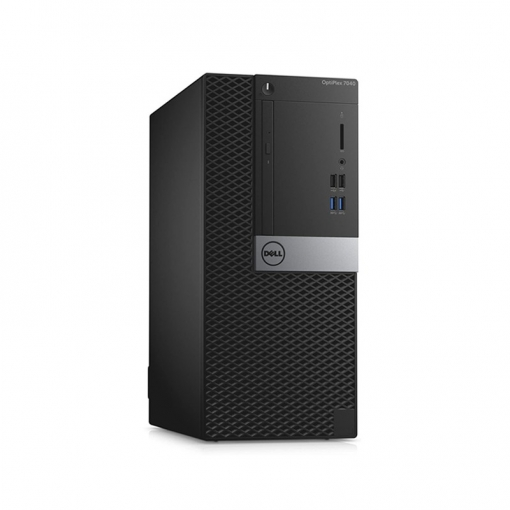

 Es una carcasa de metal o plástico, y quizá, la parte más importante del computador. En su interior se encuentran componentes que hacen que todas las otras partes cumplan su función. Es el equivalente al cerebro del computador.